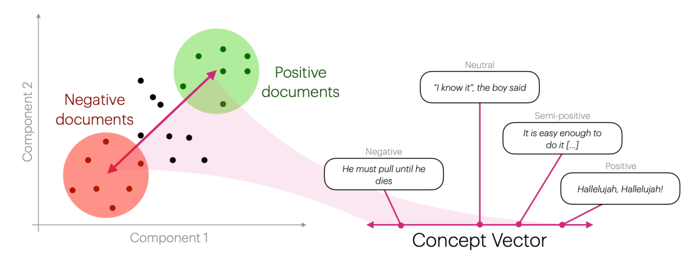

Concept Vector Projection
Concept Vector Projection is an embedding-based method for extracting continuous sentiment (or other) scores from free-text documents.

Figure from Lyngbæk et al. (2025)
The method rests on the idea that one can construct a concept vector by encoding positive and negative seed phrases with a transformer, then taking the difference of these mean vectors. We can then project other documents' embeddings onto these concept vectors by taking the dot product with the concept vector, thereby giving continuous scores on how related documents are to a given concept.
Usage
Single Concept
When projecting onto a single concept, you should specify the seeds as a tuple of positive and negative phrases.
from turftopic import ConceptVectorProjection
positive = [
"I love this product",
"This is absolutely lovely",
"My daughter is going to adore this"
]
negative = [
"This product is not at all as advertised, I'm very displeased",
"I hate this",
"What a horrible way to deal with people"
]
cvp = ConceptVectorProjection(seeds=(positive, negative))
test_documents = ["My cute little doggy", "Few this is digusting"]
doc_concept_matrix = cvp.transform(test_documents)
print(doc_concept_matrix)
[[0.24265897]
[0.01709663]]
Multiple Concepts
When projecting documents to multiple concepts at once, you will need to specify seeds for each concept, as well as its name.
Internally this is handled with an OrderedDict, which you can either specify yourself, or Turftopic can do it for you:
import pandas as pd
from collections import OrderedDict
cuteness_seeds = (["Absolutely adorable", "I love how he dances with his little feet"], ["What a big slob of an abomination", "A suspicious old man sat next to me on the bus today"])
bullish_seeds = (["We are going to the moon", "This stock will prove an incredible investment"], ["I will short the hell out of them", "Uber stocks drop 7% in value after down-time."])
# Either specify it like this:
seeds = [("cuteness", cuteness_seeds), ("bullish", bullish_seeds)]
# or as an OrderedDict:
seeds = OrderedDict([("cuteness", cuteness_seeds), ("bullish", bullish_seeds)])
cvp = ConceptVectorProjection(seeds=seeds)
test_documents = ["What an awesome investment", "Tiny beautiful kitty-cat"]
doc_concept_matrix = cvp.transform(test_documents)
concept_df = pd.DataFrame(doc_concept_matrix, columns=cvp.get_feature_names_out())
print(concept_df)
cuteness bullish
0 0.085957 0.288779
1 0.269454 0.009495
Sentiment Arcs
Sometimes you might want to get a more granular understanding of how concepts evolve in a document.
ConceptVectorProjection can be used with late-interaction/multi-vector functionality in Turftopic, and thus you can easily generate sentiment arcs within documents that either span individual tokens or contextualized rolling windows.
Tip
To get a more in-depth understanding of late-interaction/multi-vector models, read our User Guide.
from turftopic.late import LateWrapper, LateSentenceTransformer
# For plotting:
import plotly.express as px
import plotly.graph_objects as go
seeds = [("cuteness", cuteness_seeds), ("bullish", bullish_seeds)]
cvp = LateWrapper(
ConceptVectorProjection(seeds=seeds, encoder=LateSentenceTransformer("all-MiniLM-L6-v2"))
)
test_documents = ["What an awesome investment", "Tiny beautiful kitty-cat"]
doc_concept_matrix, offsets = cvp.transform(test_documents)
# We will plot document 0's' sentiment arcs
fig = go.Figure()
# We extract the tokens
tokens = [test_documents[0][start:end] for start, end in offsets[0]]
# First token is [CLS]
tokens[0] = "[CLS]"
fig = fig.add_scatter(x=tokens, y=doc_concept_matrix[0][:, 0], name="Cuteness")
fig = fig.add_scatter(x=tokens, y=doc_concept_matrix[0][:, 1], name="Bullish")
fig.show()
Citation
Please cite Lyngbæk et al. (2025) and Turftopic when using Concept Vector Projection in publications:
@article{
Kardos2025,
title = {Turftopic: Topic Modelling with Contextual Representations from Sentence Transformers},
doi = {10.21105/joss.08183},
url = {https://doi.org/10.21105/joss.08183},
year = {2025},
publisher = {The Open Journal},
volume = {10},
number = {111},
pages = {8183},
author = {Kardos, Márton and Enevoldsen, Kenneth C. and Kostkan, Jan and Kristensen-McLachlan, Ross Deans and Rocca, Roberta},
journal = {Journal of Open Source Software}
}
@incollection{Lyngbaek2025,
title = {Continuous Sentiment Scores for Literary and Multilingual
Contexts},
author = {Laurits Lyngbaek and Pascale Feldkamp and Yuri Bizzoni and Kristoffer L. Nielbo and Kenneth Enevoldsen},
year = {2025},
booktitle = {Computational Humanities Research 2025},
publisher = {Anthology of Computers and the Humanities},
pages = {480--497},
editor = {Taylor Arnold and Margherita Fantoli and Ruben Ros},
doi = {10.63744/nVu1Zq5gRkuD}
}
API Reference
turftopic.models.cvp.ConceptVectorProjection
Bases: BaseEstimator, TransformerMixin
Concept Vector Projection model from Lyngbæk et al. (2025) Can be used to project document embeddings onto a difference projection vector between positive and negative seed phrases. The primary use case is sentiment analysis, and continuous sentiment scores, especially for languages where dedicated models are not available.
Parameters:
| Name | Type | Description | Default |
|---|---|---|---|
seeds |
Union[Seeds, list[tuple[str, Seeds]], OrderedDict[str, Seeds]]
|
If you want to project to a single concept, then
a tuple of (list of negative terms, list of positive terms). |
required |
encoder |
Union[Encoder, str, MultimodalEncoder]
|
Model to produce document representations, paraphrase-multilingual-mpnet-base-v2 is the default per Lyngbæk et al. (2025). |
'sentence-transformers/paraphrase-multilingual-mpnet-base-v2'
|
Source code in turftopic/models/cvp.py
20 21 22 23 24 25 26 27 28 29 30 31 32 33 34 35 36 37 38 39 40 41 42 43 44 45 46 47 48 49 50 51 52 53 54 55 56 57 58 59 60 61 62 63 64 65 66 67 68 69 70 71 72 73 74 75 76 77 78 79 80 81 82 83 84 85 86 87 88 89 90 91 92 93 94 95 96 97 98 99 100 101 102 103 104 105 106 107 108 109 110 111 112 113 114 115 116 117 118 119 120 121 122 123 124 125 126 127 128 129 130 131 132 133 134 135 136 137 138 139 140 141 142 143 144 145 146 147 148 149 | |
fit_transform(raw_documents=None, y=None, embeddings=None)
Project documents onto the concept vectors.
Parameters:
| Name | Type | Description | Default |
|---|---|---|---|
raw_documents |
List of documents to project to the concept vectors. |
None
|
|
embeddings |
Document embeddings (has to be created with the same encoder as the concept vectors.) |
None
|
Returns:
| Name | Type | Description |
|---|---|---|
document_concept_matrix |
ndarray of shape (n_documents, n_dimensions)
|
Prevalance of each concept in each document. |
Source code in turftopic/models/cvp.py
75 76 77 78 79 80 81 82 83 84 85 86 87 88 89 90 91 92 93 94 95 96 | |
get_feature_names_out()
Returns concept names in an array.
Source code in turftopic/models/cvp.py
71 72 73 | |
push_to_hub(repo_id)
Uploads model to HuggingFace Hub
Parameters:
| Name | Type | Description | Default |
|---|---|---|---|
repo_id |
str
|
Repository to upload the model to. |
required |
Source code in turftopic/models/cvp.py
130 131 132 133 134 135 136 137 138 139 140 141 142 143 144 145 146 147 148 149 | |
to_disk(out_dir)
Persists model to directory on your machine.
Parameters:
| Name | Type | Description | Default |
|---|---|---|---|
out_dir |
Union[Path, str]
|
Directory to save the model to. |
required |
Source code in turftopic/models/cvp.py
115 116 117 118 119 120 121 122 123 124 125 126 127 128 | |
transform(raw_documents=None, embeddings=None)
Project documents onto the concept vectors.
Parameters:
| Name | Type | Description | Default |
|---|---|---|---|
raw_documents |
List of documents to project to the concept vectors. |
None
|
|
embeddings |
Document embeddings (has to be created with the same encoder as the concept vectors.) |
None
|
Returns:
| Name | Type | Description |
|---|---|---|
document_concept_matrix |
ndarray of shape (n_documents, n_dimensions)
|
Prevalance of each concept in each document. |
Source code in turftopic/models/cvp.py
98 99 100 101 102 103 104 105 106 107 108 109 110 111 112 113 | |